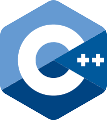

|
Python is an easy to learn, powerful programming language. It has efficient high-level
data structures and a simple but effective approach to object-oriented programming.
Python’s elegant syntax and dynamic typing, together with its interpreted nature,
make it an ideal language for scripting and rapid application development in many
areas on most platforms.
|
|
 |
Java is a high-level programming language originally developed by Sun
Microsystems and released in 1995. Java runs on a variety of platforms, such as
Windows, Mac OS, and the various versions of UNIX.
|
|
.jpg) |
C# is a modern, general-purpose, object-oriented programming language developed
by Microsoft and approved by European Computer Manufacturers Association
(ECMA) and International Standards Organization (ISO).
|
|
|  |
C++ is a middle-level programming language developed by Bjarne Stroustrup starting
in 1979 at Bell Labs. C++ runs on a variety of platforms, such as Windows, Mac OS,
and the various versions of UNIX. |